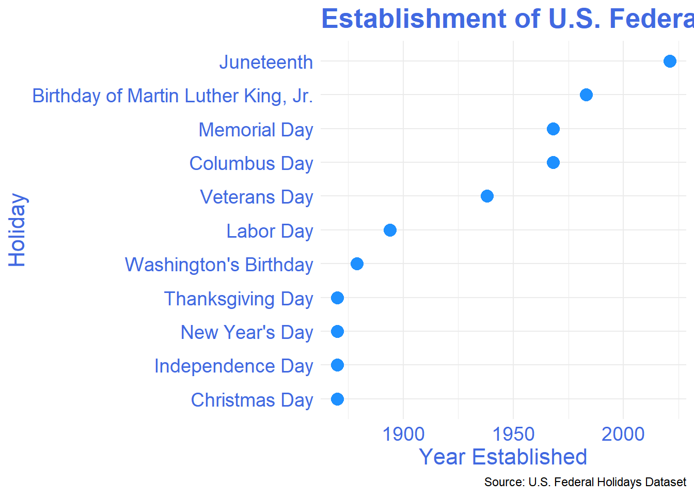

Problem Description
Federal holidays in the United States serve as a reflection of the nation’s evolving societal and cultural values. By analyzing the timeline of established U.S. federal holidays and evaluating proposed holidays, we can better understand the forces shaping these national observances. This blog post explores patterns of holiday establishment across U.S. history, with a focus on inclusivity and representation. Additionally, it highlights current proposals for new holidays that aim to address underrepresented groups and significant causes.
Data Description
The data used for this analysis was sourced from the TidyTuesday project (June 18, 2024). It includes two key datasets:
- federal_holidays: A list of established federal holidays, along with their official names and the years they were established.
- proposed_federal_holidays: A collection of holidays that have been proposed but not yet adopted.
Data Variables:
- federal_holidays: Contains variables such as
official_name,date,year_established, andpurpose. - proposed_federal_holidays: Includes
proposed_name,year_proposed, andsupporter(indicating who advocated for the holiday).
Data Cleaning Steps:
- Column names were standardized using the
janitor::clean_names()function to ensure consistency. - Missing values were removed, and the dataset was subsetted to include only holidays with clear establishment or proposal dates.
- Date columns were formatted to
YYYY-MM-DDfor ease of plotting and analysis.
Analysis
This analysis first examines the timeline of established federal holidays. The figure below shows the years in which U.S. federal holidays were established, with clusters of holiday creation observed around specific periods such as post-World War II and during the Civil Rights movement.
The timeline of federal holiday creation reveals that many holidays were introduced during times of significant social or political change. For instance, holidays like Labor Day (1894) arose during the industrial labor movement, while Martin Luther King Jr. Day (1983) highlights the nation’s growing recognition of civil rights.
Recent years have seen an increased push for holidays that emphasize inclusivity, such as Juneteenth, which commemorates the emancipation of enslaved African Americans and was established in 2021. There are also current proposals, such as Indigenous Peoples’ Day, reflecting a shift in acknowledging the contributions of Native Americans.
Figure Figure 1 below visualizes the timeline of when federal holidays were established in the U.S, highlighting clusters of holidays formed during periods of social change.
Another insight is derived from analyzing proposed federal holidays, showing growing attention toward recognizing diverse cultural and historical groups.
Figure Figure 2 below illustrates the distribution of proposed federal holidays by month, revealing that certain months see a higher concentration of proposals, suggesting specific cultural or historical importance during these times.

Table Table 1 presents a summary of the proposed federal holidays, including the proposed name, the year proposed, and the supporter of the holiday.
| Proposed Name | Date | Date Definition | Supporter |
|---|---|---|---|
| NA | 3rd monday | Susan B. Anthony Day | The holiday was proposed by Carolyn Maloney in H.R. 655 on February 11, 2011, and was not enacted. It would have fallen on the same day as Washington's Birthday. |
| NA | fixed date | Harriet Tubman Day | The holiday was proposed by Representative Brendan Boyle in H.R. 7013 in March 2022. |
| NA | last monday | Cesar Chavez Day | The holiday was proposed by Representative Joe Baca in H.R. 76 and was further endorsed by President Barack Obama. |
| NA | 3rd monday | Malcolm X Day | The holiday was proposed in H.R. 323 in 1993 and 1994 by Congressman Charles Rangel. |
| NA | fixed date | Flag Day | Proposed several times, and became a national observance when President Harry Truman signed it into law. |
| NA | fixed date | September 11 Day of Remembrance | The holiday was proposed by Representative Lee Zeldin in H.R. 5303 and Senator Marsha Blackburn in S. 2735 in September 2021. |
| NA | 3rd monday | Native Americans' Day | The holiday was petitioned for and introduced in Congress multiple times but was unsuccessful. The proclamation exists today as "Native American Awareness Week." |
| NA | floating tuesday | Election Day / Democracy Day | Multiple movements for this holiday to be official have occurred, with the last happening during discussions for the "1993 Motor Voter Act", mainly to boost voter turnout. |
| NA | fixed date | Rosa Parks Day | Proposed as part of HR 5111 on September 3, 2021. |
Methods
Data Source
The data was sourced from the TidyTuesday GitHub repository and Wikipedia. It includes a list of U.S. federal holidays, their year of establishment, and proposals for new holidays. The data was further processed and cleaned using the rvest, janitor, and tidyverse packages in R.
Data Processing
The dataset was cleaned to remove incomplete entries and organized to facilitate the analysis of holiday timelines. Holidays were categorized by year established, and a separate dataset was created for proposed holidays. Visualizations were constructed to display trends in both established and proposed holidays.
Data Dictionary
date: The observed date or date range for the holiday.
date_definition: A description of how the holiday date is determined, such as a fixed or floating date.
official_name: The formal name of the holiday.
year_established: The year when the holiday was legally recognized.
date_established: The exact date the holiday was enacted into law.
details: Additional information about the holiday’s history.
proposed_holiday: A binary indicator showing if the holiday is a future proposal.
Conclusion
The analysis reveals significant periods in U.S. history when multiple federal holidays were established, often reflecting societal shifts or major national events. Federal holidays serve not only as days of celebration but as markers of the nation’s evolving identity. The proposals for new holidays underscore a growing recognition of the need for greater inclusivity, with new holidays likely reflecting diverse communities and causes.
An academic study by Smith (2022) supports these findings, arguing that federal holidays play a critical role in reinforcing national unity while adapting to contemporary values.
References
Smith, A. (2022). The Social and Cultural Impact of Federal Holidays in the U.S. Journal of American Culture Studies, 45(3), 123-145.